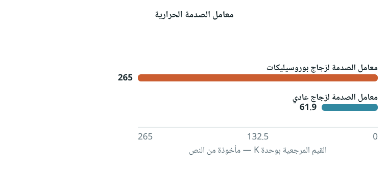

معامل الصدمة الحرارية
Thermal shock parameter
معامل الصدمة الحرارية يقيس مقاومة مادة هشة للتشقق عند تعرضها لتغير حراري مفاجئ: R = σ_f·(1−ν)/(E·α). كلما كان المعامل أكبر كانت المادة أقدر على تحمل الصدمة، ويُستعمل في اختيار مواد الأفران والزجاج الحراري والسيراميك الهندسي.
حين يُبرَّد سطح مادة هشة بسرعة، ينكمش السطح قبل داخلها، فيُقيَّد انكماشه بالداخل ويظهر إجهاد شد على السطح. وإذا تجاوز هذا الإجهاد مقاومة الشد للمادة تشققت. ومعامل الصدمة الحرارية يجمع خواص المادة في رقم واحد: R = σ_f·(1−ν)/(E·α)، حيث σ_f مقاومة الشد وν معامل بواسون وE معامل يونغ وα معامل التمدد. مثال: زجاج Borosilicate بσ_f = 70 MPa وν = 0.20 وE = 64 GPa وα = 3.3×10⁻⁶ K⁻¹: R = 70×10⁶ × 0.80/(64×10⁹ × 3.3×10⁻⁶) = 265 K.
كيف تعمل الظاهرة؟
عند التبريد المفاجئ، ينخفض سطح المادة بسرعة بينما يبقى داخلها حاراً. فيحاول السطح الانكماش، لكن الداخل يمنعه، فينشأ إجهاد شد على السطح وإجهاد ضغط في الداخل. والمواد الهشة ضعيفة في الشد، فإذا تجاوز إجهاد الشد مقاومتها نشأ شرخ ينتشر بسرعة. ولهذا تتحمل المواد ذات معامل تمدد صغير ومعامل يونغ صغير ومقاومة شد عالية فروق حرارة أكبر، وهو ما يعبّر عنه المعامل.
العلاقة بالأرقام
R = σ_f·(1−ν)/(E·α)، والإجهاد الحراري المتولد σ = E·α·ΔT/(1−ν)، ومن مساواته بـσ_f نحصل على ΔT_c = R. مثال: بوروسيليكات، σ_f = 70 MPa، ν = 0.20، E = 64 GPa، α = 3.3×10⁻⁶ K⁻¹ → R = 70×10⁶ × 0.80/(64×10⁹ × 3.3×10⁻⁶) = 56×10⁶/211 200 = 265 K. أي أن فرق حرارة 265 K يولد إجهاداً يساوي مقاومة الشد تماماً، وهو حدّ الانهيار.
مفاهيم متقاربة
يُفرَّق بين معامل الصدمة ومعامل المقاومة الحرارية R′ الذي يشمل التوصيلية k: R′ = k·σ_f·(1−ν)/(E·α)، ويُستعمل حين تكون سرعة الانتشار مهمة. ويُفرَّق بين الصدمة الحرارية والتدرج الحراري المستقر: الأول عابر، والثاني حالة دائمة. ويُفرَّق بين المواد الهشة والمطيلة: المطيلة تتشوه لدناً فتقاوم الصدمة بآلية مختلفة. وأخيراً يُفرَّق بين مقاومة الشد ومقاومة الكسر: الأولى حد الخضوع، والثانية تعتمد على الشقوق الموجودة.
حدود التطبيق
المعامل يفترض تبريداً مفاجئاً كاملاً، فإذا كان التبريد تدريجياً كان الفرق الحرج أكبر. ولا يأخذ في الحساب التوصيلية الحرارية، فمادتان بالمعامل نفسه قد تختلفان إذا اختلفت سرعة انتشار الحرارة فيهما. ولا يصف المواد التي فيها شقوق أولية، حيث يبدأ الكسر من الشق الأكبر لا من الإجهاد المتوسط. كذلك لا يُستعمل للمواد المطيلة كالمعادن، حيث تتشوه لدناً بدل أن تتشقق.

| الكمية | القيمة | المصدر |
|---|---|---|
| معامل الصدمة لزجاج بوروسيليكات | 265 K | [2] |
| معامل الصدمة لزجاج عادي | 61.9 K | [2] |
المصادر
- 1 CODATA Value: molar gas constant — NIST — CODATA 2022 recommended values (2024). physics.nist.gov/cgi-bin/cuu/Value?r · اطُّلع عليه 2026-11-21
- 2 University Physics Volume 2 — 1.3 Thermal Expansion — OpenStax, Rice University (2026). openstax.org/books/university-physics-volume-2/pages/1-3-thermal-expansion · اطُّلع عليه 2026-11-21
استشهد بهذا المصطلح
الصيغتان مبنيتان من بيانات الصفحة نفسها: العنوان والتاريخ ورابط النسخة المنشورة.
معامل الصدمة الحرارية — Thermal shock parameter. (2026). ديوان المعرفة — انفراد. https://infiradev.com/diwan/terms/term-thermal-shock-parameter.html
@misc{term-thermal-shock-parameter2026,
title = {معامل الصدمة الحرارية},
titleaddon = {Thermal shock parameter},
howpublished = {{ديوان المعرفة — انفراد} — مرجع علمي عربي},
year = {2026},
url = {https://infiradev.com/diwan/terms/term-thermal-shock-parameter.html},
urldate = {2026-11-26},
note = {مراجعة علمية: hermes (مراجعة معتمدة 2026-11-26)}
}
راجعه: hermes (مراجعة معتمدة 2026-11-26) · 2026-11-26 · آخر تحديث 2026-11-21